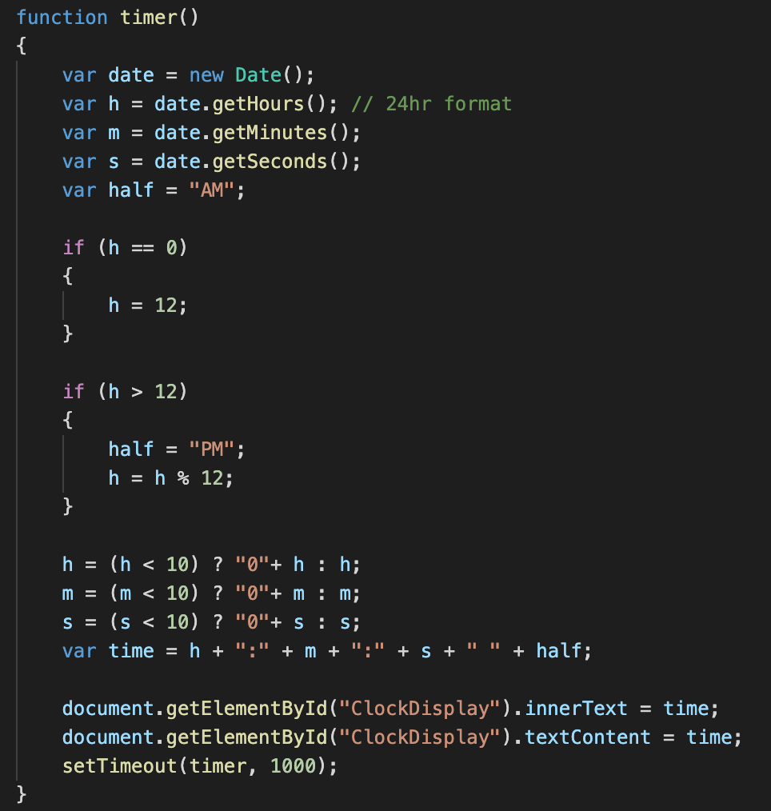

This week for my blog I wanted to learn how to do something neat in JavaScript. I first looked up cool things to do in JS but saw a buch of really complicated things. Then I remembered about the date object we used in one of the labs and looked up things I could do with that. I then saw it has a field for hour minute and seconds and decided to make a clock. The clock could be implemented on a store website for when the release something or be used for a New Years Eve Clock to watch for midnight. To do this was fairly simple and used a function that created a new date object and then formatted a string with the hours, minutes, and seconds. I then updated the div in the html body and it shows the updated time on the page. Below is the live clock I implemented.
I am still trying to learn more JavaScript and how it can be used but I thought this was really cool. I would have done more with it but unfotunatly this week I was very limited on time with a bunch of job interviews that I needed to attend throughout the state.
Below is some of the code that I used to help make the clock...
